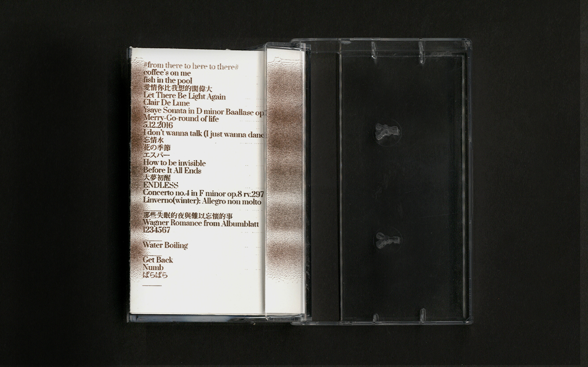
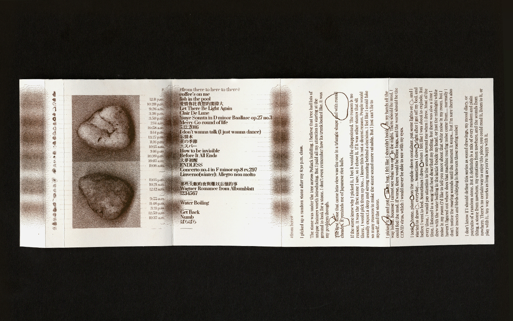
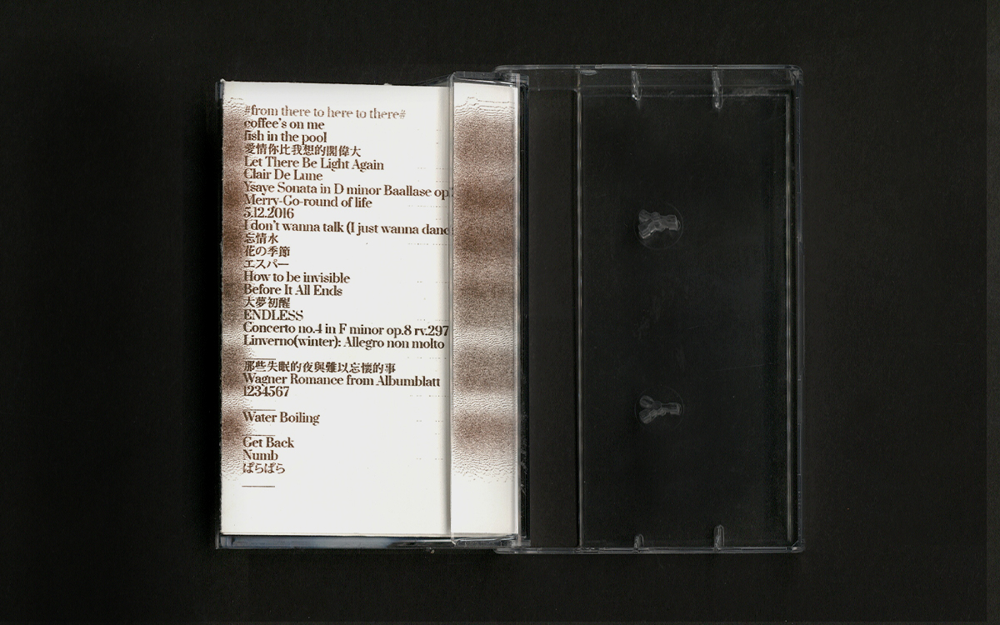
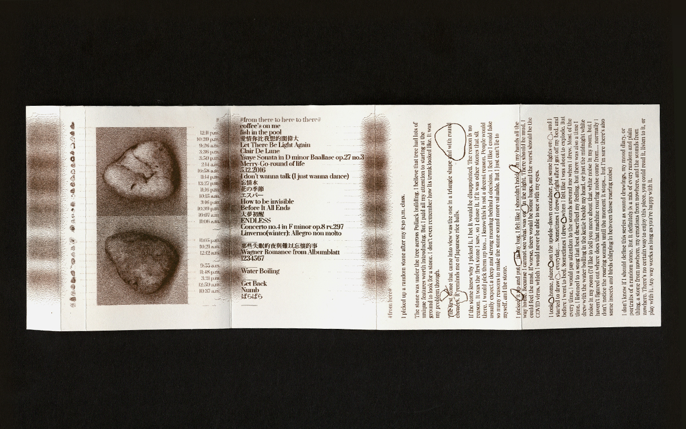

The Random Stone
Artist book, September 2021.
Risograph, Frame by Frame Drawing,
5.5 × 8.5 in.
This casette is a music video for the random stone I picked up after my 8:30 p.m. class.
This cassette features a music video with a random stone that I picked up after my 8:30 p.m. class. It is up to the audience to decide how to enjoy this piece, whether by reading, listening, or touching it. The drawings on the case are life-size replicas of the stone, and the cassette tape itself does not contain audio, but rather, the drawings of the stone. The twigs and small fruit placed in the case serve as the sound sources for this piece. The aim of this work is to experiment with the system and function of an outdated medium using a mundane object.

 


